朝の 6 時 18 分、バスは定刻通り扇沢につきました。バスの中ではゆっくり眠れました。というの大嘘で上高地のときと違って全然眠れませんでした。3 時間くらいしか寝れてないんじゃないでしょうか。
その要因としてはバスが 3 列シートじゃなく 4 列シートで、座席も普通の座席で 3 列シートの寝やすい豪華なシートじゃないこと、4 列シートなので狭くて苦しいこと、それからこれが一番大きかったのですが、隣の席のねーちゃんの寝相が悪くて蹴られるわ殴られるわで、とてもじゃないですけど眠れる状況じゃありませんでした。しかもバスが長野に入ってバス停に止まる前後にやはり明かりを煌々とつけるし。0 時 30 分頃消灯だったのに朝の 4 時 30 分頃にはもう明かりをつけるんですから最悪です。
そんなわけでバスは悲惨だったのですが、なにはともあれ無事扇沢に無事着きました。明らかに寝不足でしたが旅行の実質的な初日で、なんだかテンションも高くいい気分のような気もしていました。扇沢駅から見える山際から日が昇りかけていて私達家族を歓迎しているような気がしなくもありませんでした。
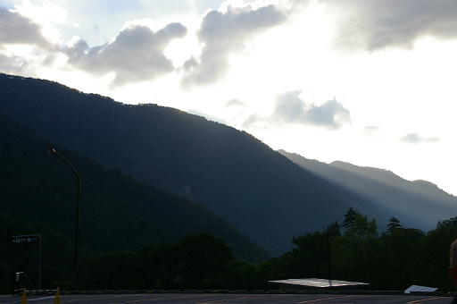それで 6 時 18 分頃に扇沢についたのはいいのですが、立山黒部アルペンルートの関電トンネルトロリーバスの始発が 7 時半とのことで、それまで他の観光客や登山者とチケット売り場の前でズラッと並んで座り込むことになりました。いや私の場合は体幹機能障害があって一度地面に座ると捕まるところがないと立ち上がれないので、ずっと立ちっぱだったのですけどね。ちなみに妻も膝が悪いので地面に座ることができず、ずっと立ちっぱなしでした。
娘などは暇を持て余して扇沢駅内の散歩に出かけて、なんでも破砕帯から湧き出る水を汲める水場があるらしく、そこで水を汲んだりしてました。一口もらいましたが冷たくてうまかったです。
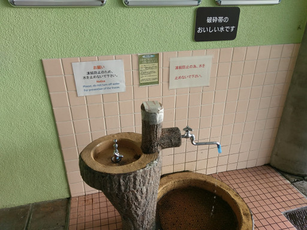そのうちアルペンルートのチケットの発売が始まったので 3 人分のチケットを買ったのですが、立山黒部アルペンルートは障害者と障害者 1 人に付き 1 人の付添人が半額になります。私は身体障害 5 級、旅客鉄道株式会社旅客運賃減額第 2 種の手帳を持っているので、大人 2 人が半額につまり 2 人分の金額で 3 人が室堂まで移動できるのでした。手帳を持っている人は減額されるので知っておくといいですよ。
チケットを買っている時、隣の窓口ではチケットを買ってるおっさんが、いつまで待たせる気だ、これだけの人が待っているのだからもっと早く窓口を開けろよと職員さんにキレていました。無茶なことを言うなぁ、職員さん達窓口を開ける少し前に出勤して忙しく立ち働いているのに、と職員さんが気の毒になりました。
チケットを買うと 2 階にある改札に並ぶのですが、2 階に登ってみるともうすでにすごい数の人が並んでいます。これはさすがに座れないかと覚悟しました。確か記憶によるとトロリーバスは 3 台で運用されていて 1 台につき 30 数人しか座れないと記憶していたからです。トロリーバスに乗っている時間はわずか 16 分ですが体幹機能障害がある身としては長い 16 分です。なにせ転倒して周りの人を巻き添えにする危険性があります。正直座りたい、それが本音です。
これだけの人が待ってるんだから、始発を早めろよボケがっ！！っと例のクレーマーがまた職員さんを捕まえて文句を言い始めました。正直「みんなちゃんと並んどるんじゃ。我慢できひんねやったらお前は帰れ！！すぐ帰れ！！」と内心毒づいていました。
が、その後突然独りの職員さんが並んでいる人たちの前に進み出て「まことにおまたせしてすみません」となにやら口上を始めました。お詫びすることないのになぁと思っていたのですが、「あと 15 分ほどで改札が始まります。15 分お時間があるのですが、みなさんに是非とも知っていただきたいことがございます。みなさん朝ゴハンはまだお済みではありませんよね。なんと今ここにお弁当があるのです」
私達家族を含めて改札前の人たちは爆笑です。
このお弁当の販売芸、とても慣れていて「標高が高くなるに連れてお値段も高くなってまいります」などとまったくその通りのことをお笑いポイントを突きながらプレゼン、そうあれはプレゼンですね、していきます。我が家はとうとうその職員さんからお弁当を 3 人分買ってしまいました。おもしろかったというのもありますが、まだ朝早い時間で、トロリーバスの終点の黒部ダムのレストハウスもまだ営業してなさそうで黒部平の蕎麦屋さんまで食事を我慢するのが耐えられなかったというのもあります。
それで改札が始まって座れないだろうなぁと暗い気持ちで乗り場に向かったのですが、記憶だと 3 台だったトロリーバスは実際は 5 台でした。おかげで 4 台目に乗り込み無事家族全員座ることができました。がトロリーバスが出発する頃にはトロリーバスは非常に混んでいて立っている人もギュウギュウ詰めの状態でした。座れてよかった。
トロリーバスでは走行中、トンネル工事の話やトロリーバスの特徴などをビデオで流しており私も娘もそれを見ていたのですが、トンネル内のブルーの蛍光灯が近づくと
「あの青い蛍光灯の辺りが破砕帯や。いわゆる断層やな。ボロボロになった岩の間を大量の水が流れてるらしい。NHK で見たんやけど普通は 1 日に何メートルか掘り進めることができるそうなんやけど、破砕帯では 1 日に 40cm しか掘られへんかったらしい」
「ふーん」
「殉職した人も多いらしいで」
娘にはついでに黒部の太陽と海峡の２つの映画を勧めておきました。
そんなことを話しているうちに黒部ダムの駅に着きました。関電トロリーバスは今年 2018 年でその役目を終え、来年 2019 年からは電気バスに役目をバトンタッチするらしく、このトロリーバスに乗れるのは今年で最後だということを娘に話すと、娘はトロリーバスの写真を撮っていました。
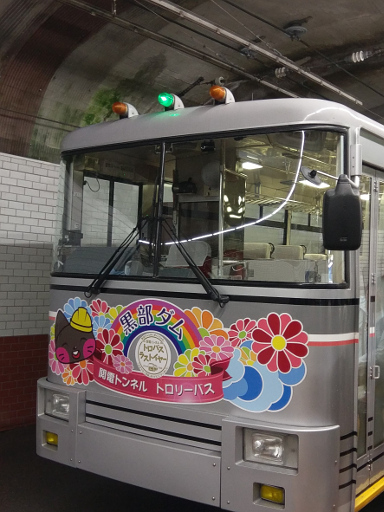このトロリーバスの写真ですが娘がスマホで撮ったものなのですが、私も一眼レフで絞り開放で撮ったもののシャッタースピードを稼げずブレブレのひどいものになってしまったので消してしまって手元には残ってません (私のカメラには手ブレ補正がないのでその影響もあるかもしれませんが)。なんでスマホの方がまともに撮れるんでしょうか。スマホの方がレンズが明るいんですかね？解せません。
黒部ダムの駅から黒部ダムに行くには階段を降りなければなりません。そう。膝が悪い妻と体幹機能障害がある私には鬼門の階段です。その階段をまぁなんとか降りてトンネルを出ると黒部ダムで、その右脇にはレストハウスが建っていました。ですが売店はかろうじて開いているもののレストハウスはやはりまだ営業していないようでした。弁当を買っておいて正解でした。
レストハウスの脇には水場があって、やはり破砕帯由来の水を汲むことができます。そこで水を汲んでレストハウス前のベンチに座ってお弁当にすることにしました。時間にして 8 時 30 分ごろになります (写真の Exif データで確認しました)。
その後記念写真を撮ったり
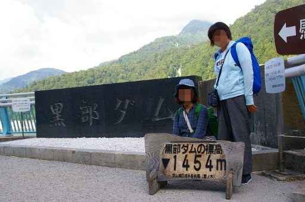黒部ダム名物のソフトクリームを食べたり、展望台でダムの写真を撮ったり、娘はなにやら新展望広場特設会場で展示を見たりしてました。
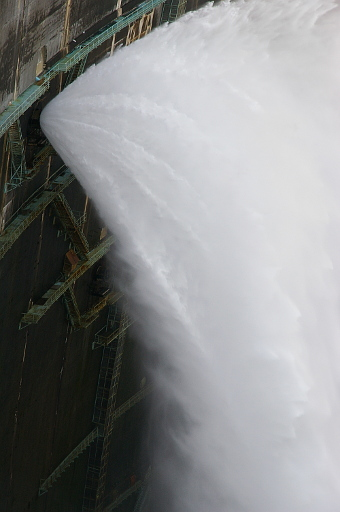破砕帯の水を使ったハサイダーというサイダーも名物らしいので飲みました。
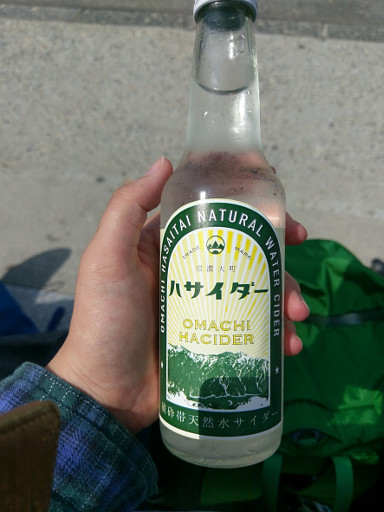結局黒部ダムには 9 時半頃までいました。妻はここで全 HP を振り切ったのかもしれません。この後の疲れ方が……
この後はケーブルカーに乗って黒部平まで移動することになります。このケーブルカーはご存知の通りずっと地下を走ります。妻は「ケーブルカーというものは景色を眺めながら乗るものじゃないの？」と言っていましたがその気持ちはわかります。初めて私が乗ったときも同じような気持ちになりました。
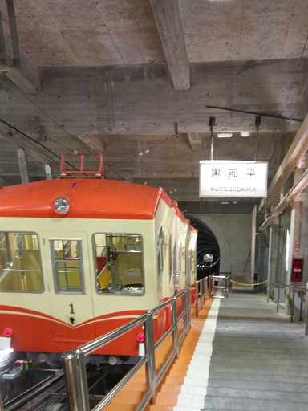わずかな時間で黒部平に着きました。黒部平は私が好きな場所です。ここから見る立山の東壁がすばらしいのですね。
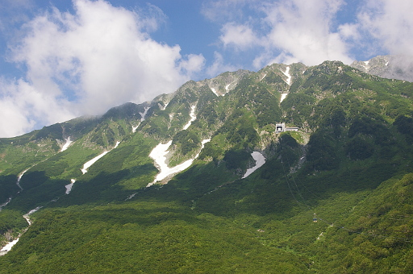上の写真はこの旅行で撮ったものなのですが、正直 2010 年の旅行のときに撮った下の写真の東壁のほうが高度感があっていいなぁと思っています。
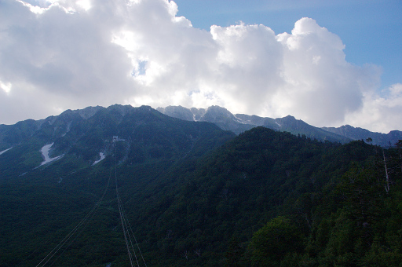それとこれも知っている人は知っているのですが、黒部平にも水場があるんですね。下の写真に石碑が写っていますが、ちょうど妻と娘の背後が水場になっています。真後ろです。水が汲みやすいように柄杓がおいてあります。ここの水も美味しいです。
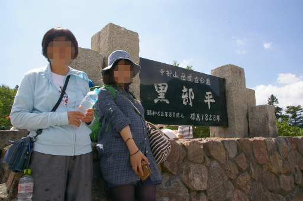黒部平からはロープウェイに乗って大観峰へ。このロープウェイ途中に支柱が 1 本もないことで有名ですがそういうあれこれは省略します。
それで大観峰についたのですが、ここで私大失敗します。大観峰からのスバリ岳、針ノ木岳、黒部湖の展望がすばらしいのですね。写真左がスバリ岳で右が針ノ木岳になります。下の湖は黒部湖です。
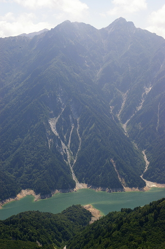なのでまぁこんなふうに写真に収めたかったわけです。なので大観峰駅の展望台に登ったのですがその高いこと高いこと。延々と階段を昇り降りすることになりました。特に膝を痛めていた妻には辛かったようで、ここで疲労は極限になってしまったようです。申し訳ないことをしました。
大観峰からは立山トンネルトロリーバスで室堂に向かいます。10 分ほどで室堂駅に着きます。室堂駅についたらまずは昼食をどうするか決めないといけません。選択肢は 2 つ。バスターミナルに隣接するホテル立山のレストランで食べるか、宿のみくりが池温泉まで一気に歩いてみくりが池温泉のレストランで食べるかです。私達はホテル立山で食べることを選びました。疲れていたからです。みくりが池温泉のレストランの昼の営業時間が 14 時までとあまり時間がなかったことも理由の一つです。
それでホテル立山のレストランでカツカレーを食べたのですが 1700 円でした。山の上だしホテルのレストランだし高いのは覚悟していましたが高すぎます ＞＜。しかたないですけど。
食事を終えて一休みして少しだけホテルのお土産屋さん (Yamasanka のピンバッジが充実していて帰りに買おうと思いました) を覗いてからバスターミナルを出ました。久しぶりの立山室堂です。舞い上がってしまいました。
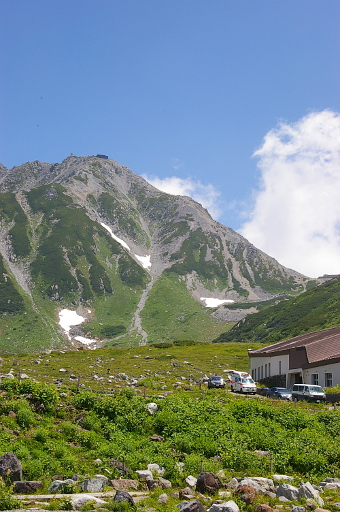妻は「疲れてるので早く宿に行こう」というのに
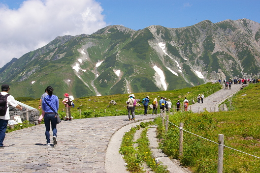途中立ち止まっては写真を撮りまくるわ
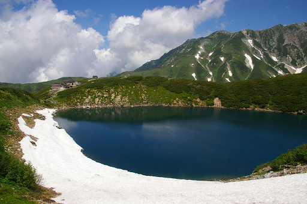久しぶりのミクリガ池に興奮して立ち止まってはシャッターを押すわ
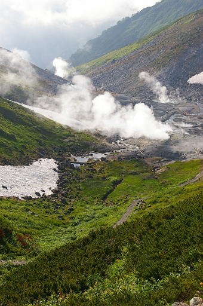あぁ、地獄谷久しぶりと立ち止まってはシャッターを押すわで、寄り道は一切してないのですが、すっかり妻を怒らせてしまいました。本当にすみませんでした。この場をお借りしてお詫びします。私が今回の旅行で本当に来たかったのは室堂だったので我を忘れました。
それでこの日最後の難関が我々の前に立ちはだかります。下の写真を見てください。みくりが池温泉の手前に登りの階段がありますよね。
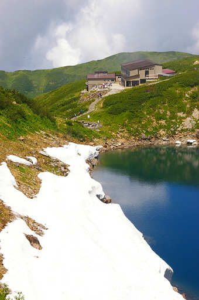実は階段はこの上りだけではなく、みくりが池温泉手前の階段は下りがあって、次に上りがあって、また下りがあって、そして写真にある上りの階段があります。体幹機能障害がある私にとっても危険な階段ですが (実際 2 度ほど転倒しそうになりました)、この階段が膝を故障していて疲労の限界まで来ている妻にダメを押してしまうことになりました。
チェックインを済ませて部屋に転がり込むと、妻は布団を敷いて倒れながら「もう今日はどこにも行かないし、二度と山には来ない。明日もずっと部屋の中にいる」と怒って眠ってしまいました。雰囲気が一気に暗くなってしまったのは言うまでもありません。
今日、明日、明後日、どうなってしまうんだろうと気分が暗くなってしまいましたが、あれこれ考えていても始まりませんし妻を放っておいて散策にも出かけられませんので、とりあえず宿の温泉に浸かりにいくことにしました。
ご存知の通りみくりが池温泉の温泉は日本最高所にある温泉で、源泉は目の前の地獄谷にありそこから温泉を組み上げている源泉かけ流しの温泉です。湯船は 2 つに分かれており 1 つは源泉かけ流しの湯温が非常に高い湯船で、もう 1 つは若干温度を下げている湯船になります。湯温を下げる方法までは知りません。
それで最初は湯温の高い方の湯船に入ろうとしたのですが、熱くてとてもじゃありませんが入れません。どうりで誰も熱い方の湯船に入っていないわけです。なので若干湯温を下げている方の湯船に浸かりました。やや熱めとはいえいい湯加減でした。
温泉から出るとまた妻は寝ていました。やることもないのでスマホで twitter を眺めたりして時間を潰していました (立山に来てまで twitter ……と思わくもなかったのですが)。au の電波は普通に入るのですね。
やがて妻も起きてきて若干気分が治ったとのこと。正直ホッとしました。が明日以降どのように行動するかという課題は残ったままです。ですがその日はとりあえずみくりが池温泉前のテラスで過ごしたりもしました。
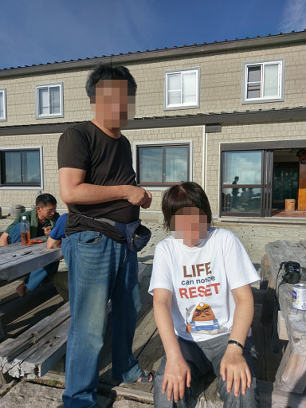そんなこんなのうちに食事の時間になりました。みくりが池温泉は山小屋だと自称されているのですが、食事の内容は山小屋のそれではありませんでした。山小屋では考えられない皿数に内容です。これは普通の稜線上などにある山小屋では不可能です。
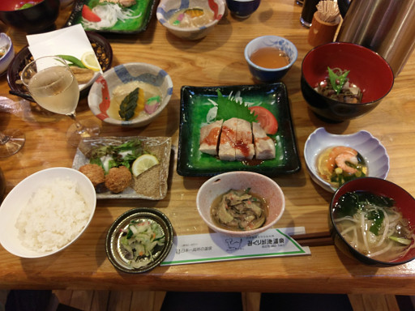食事の時、ワインもちょっぴりいただきました。3 人でハーフボトル 1 本です。
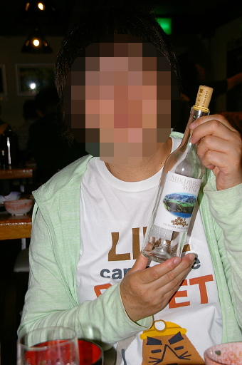食事も終わって明日どうするかはともかく、最終日の帰りは必ずみくりが池温泉から室堂バスターミナルまで歩かなければなりません。どうにかして例の階段を通らない方法はないかと、宿のスタッフに相談してみました。みくりが池を周回する遊歩道があるけれども、階段がある方向とは反対周りでもやはり階段が沢山あるのか訪ねてみたのです。
スタッフの話では階段はみくりが池温泉前の少しだけ (20m ほど) で、後は階段はないとのことでした。ただし立山室堂山荘の手前で 10m ほどの高さを登る急坂があるとのことで、そこだけ注意してくださいとのことでした。
翌日は私と娘が 2 人で散策と偵察を兼ねてそのルートを歩くことにし、妻は宿で過ごすということで話は落ち着きました。
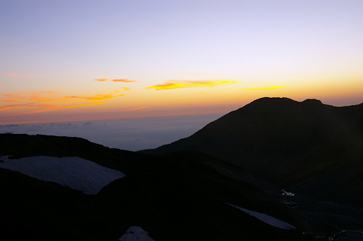あとはめいめい時間を潰して就寝しました。